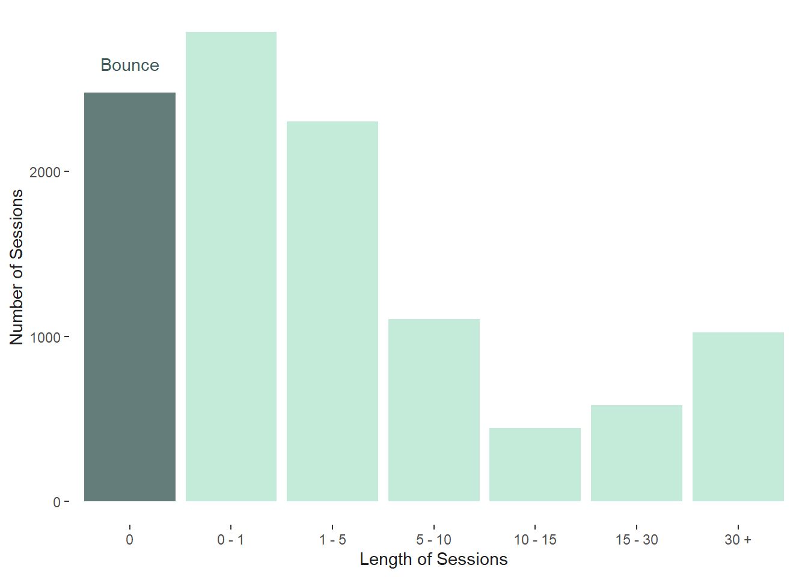
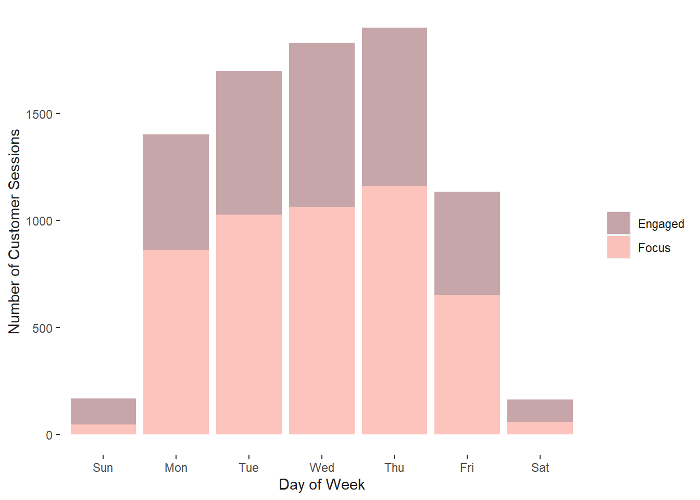
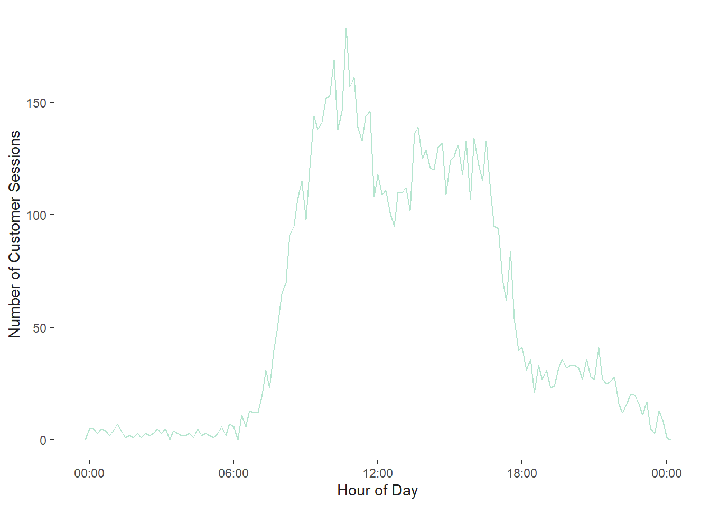
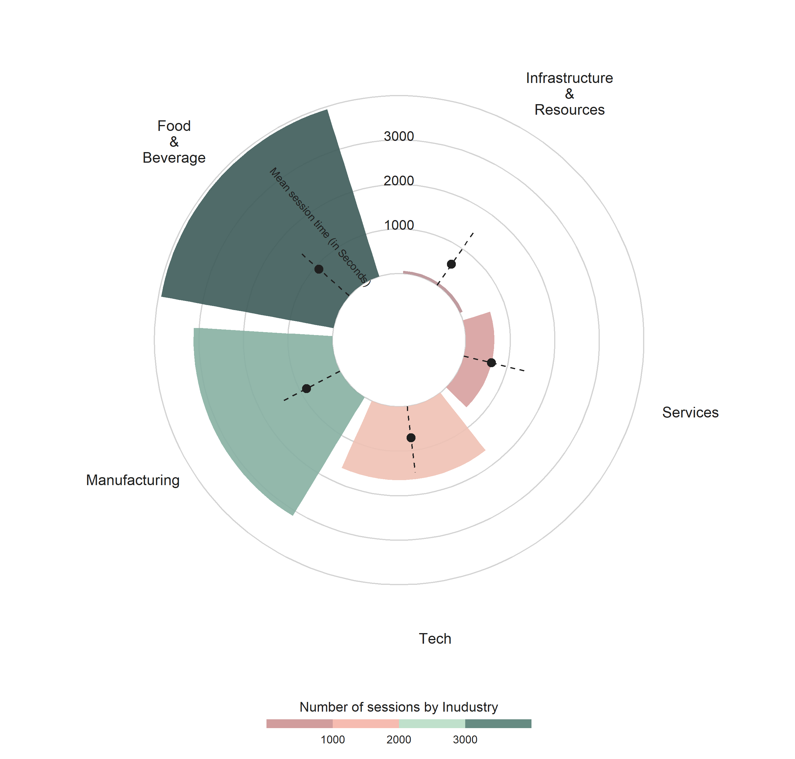
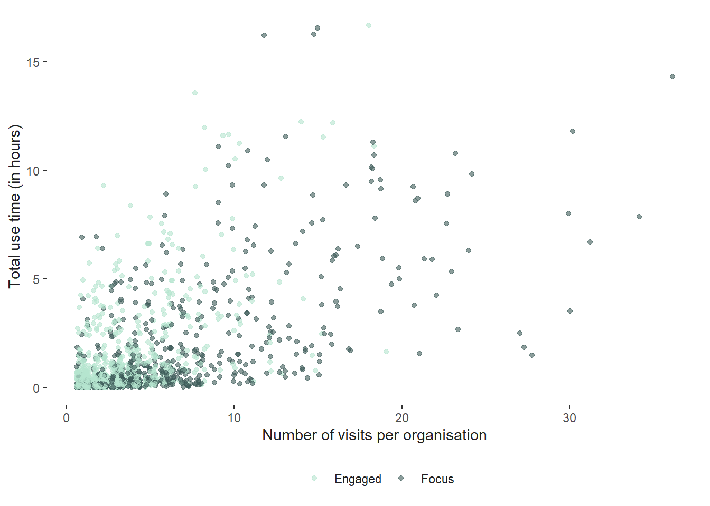
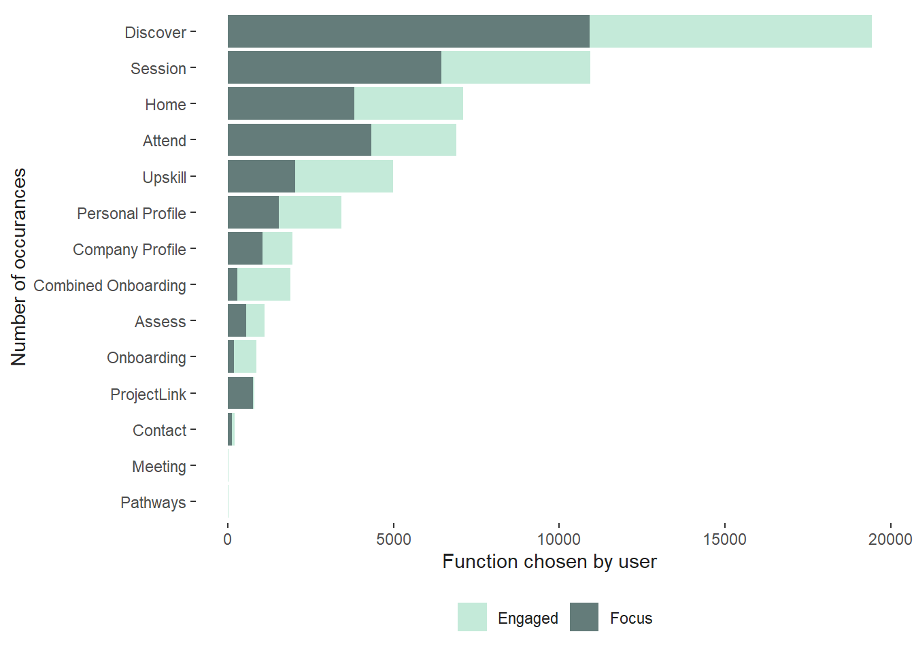
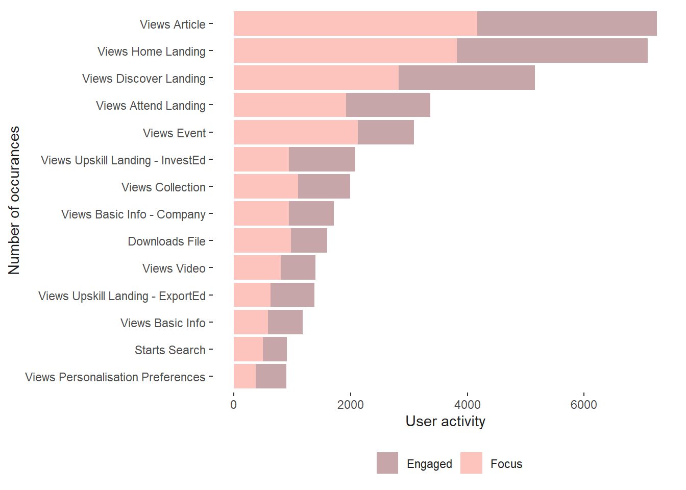
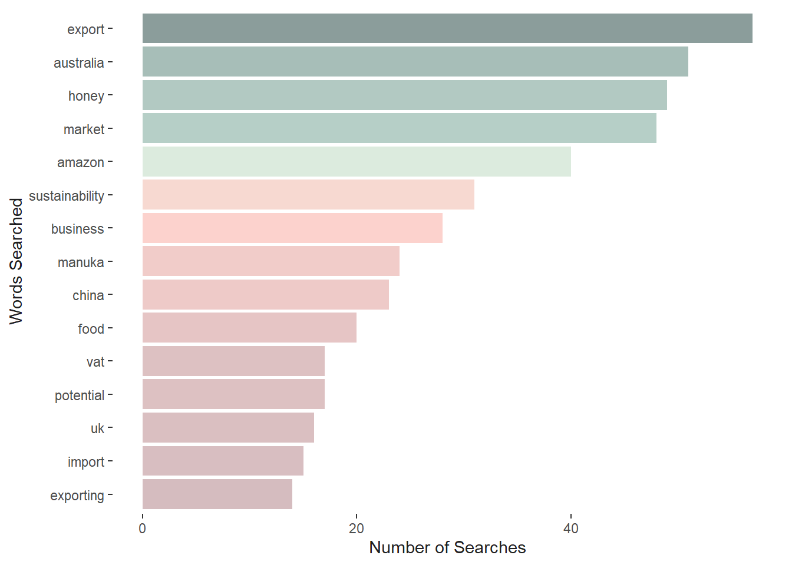
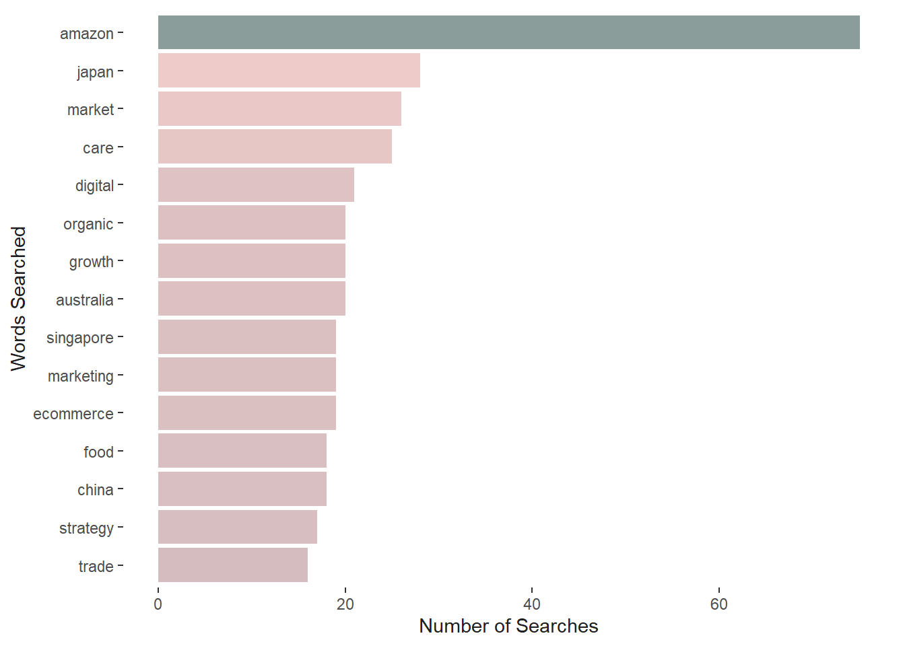
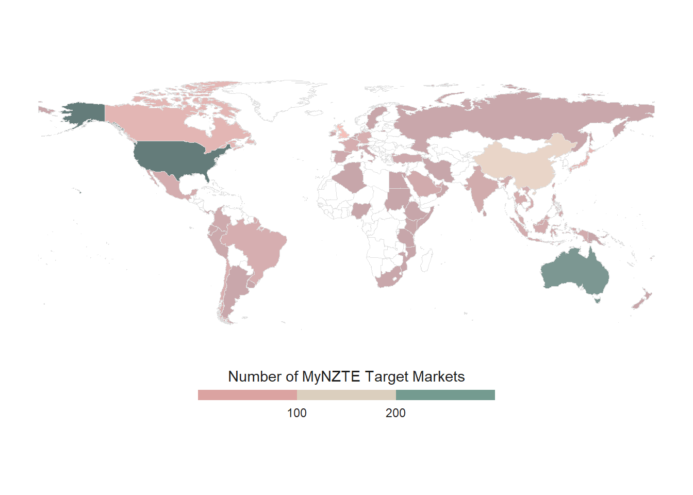

Understanding customer interaction can aid in the understanding of how customers engaged with the platform and drive strategic business decisions,
Over the 6 month period (March to August 2021), there were 3,700 business that used the MyNZTE platform, with 11,000 unique sessions across the period that averaged 15 minutes long per session (though this varies considerably),
With most users predominately based in the Manufacturing and Food and Beverage sectors.
Most customers use the Discover function and tend to spend their time frequently viewing articles and scrolling the Home and Discover landing,
User searches also tend to be centered around exports, Australia, China, growth, strategy and eCommerce.
MyNZTE Customer Engagement
Understanding customer interactions through online platforms offers several key advantages in understanding how services provided are indeed, having the desired engagement you want. That is, website data can reveal how long customers spend on the site per session, how many of them ‘bounce’ after logging in, most frequently used functions or actions they take, and summarised search queries can reveal what might be ‘top of mind’ for your customers.
All of this readily available data can help guide website investment decisions, reveal how customers consume content, figure out current topics of interest, and identify where engagement might not be working as well.
Over the six months from March through to August of 2021, MyNZTE had about 11,000 unique customer sessions, which came from about 3,700 different organisations of which a third were the NZTE focus group. While the length of each session varied widely across the customer base (from 0 minutes to an entire day), the mid-point of each session across users was about 1 minute (see Figure 1). In combination, the bounce rate for the website across this period was about 23% - suggesting almost 80% of MyNZTE users are engaging beyond a single page view, relative to 23% of the sessions, in which users left immediately after logging on.

Figure 1: Number of user sessions over the 6 month period
Given MyNZTE is a for business platform, user activity across the day occurs largely during the working hours (9am to 5pm), with most sessions occurring around the mid-morning (as shown by Figure 2 (a)), following a second peak post lunch. Most activity occurs across the working week, peaking on Thursday, with little activity occurring over the weekend (Figure 2 (b)).

(a) Customer sessions across the week day

(b) Customer sessions during time of day
Figure 2: Timeline of customer sessions over the 6 month period
Varying levels of meanginful engagement
While the number of industry based users are predominantly in manufacturing (35%), followed by food and beverage (28%), then tech (24%) and services (13%), the largest user activity comes from the food and beverage sector making up 42% of activity, then manufacturing (making up 33%). However, the tech and services industries users tend to be under-represented in activity relative to the total number of organisations on the platform (as shown in Figure 3).
However, despite the lower user engagement from the services and tech businesses, the average time spent on the platform across sectors, doesn’t vary drastically, with tech and services spending the least amount of time on average (11 minutes) and food and beverages spending the most (about 15 minutes on average). Suggesting that, while MyNZTE might have the highest engagement from the food, beverage and manufacturing businesses, the platform is catering to the tech and service businesses needs.

Figure 3: industry
Figure 4 shows the total number of times an organisation has engaged with the platform as well as total time spent by the two NZTE customer segments (Focus vs. Engaged) over the 6 month period. The focus group tends to repeatedly use the platform more, with an average log-in rate of 5.3 times per business over the 6 month period, compared to engaged businesses, who on average had a log-in rate of 2.5. This also corresponds to a higher session length time for the focus group, who tend to use myNZTE 14 minutes per session on average, compared to the engaged group, in which the central tendency was 9 minutes per session.

Figure 4: Organisation uses vs time spent
Understanding the MyNZTE value-add
How customers spend their time on the platform reveals where they find the most value-add on the website. From a business perspective this is important feature that will help guid future platform upgrades, content prioritisation, and maintenance efforts.
The Discover function has the largest number of hits, just shy of 20,000 (making up 33% of total hits), which is true for both the engaged and focus groups (see Figure 5). This is followed by Session (of 11,000 hits), Home (of 7,100 hits), and then Attend (of 6,900 hits). Aside from logging in, customers across both groups tend to view articles the most (15% of total user activity), scroll the home landing (15%), scroll the discover landing (11%), and the attend landing page (7%). Suggesting that this is where they glean the most useful content from the MyNZTW platform and shows where they’re likely to spend most of their time.

(a) Customers function choice

(b) Customer action choice
Figure 5: Where do customers often natigate to
What are Customers looking for?
Search queries can provide a useful insight into what customers are thinking. Figure 6 sets out the most frequent word occurrences across searches between the two customer segments. In this case, Amazon, market, Australia, export, and China are some of the most frequently reoccurring word searches that occur across both groups. However, these are some interesting differences between the two groups. Where the focus groups has more search terms centered around, growth, marketing, strategy and eCommerce. The engage group has frequent search terms such as, Manuka honey, business, potential, sustainability.

(a) Engaged Customers

(b) Focus Customers
Figure 6: A frequency word count on search quries
We can also visualise search terms via word clouds, to produce something more evocative. Figure 7 is a combination of word searches across both groups.
Figure 7: A wordcloud of search queries
Customer Target Markets
For organisation where a target market is present ( about 765), the United States (294), Australia (268), China (139), and the United Kingdom (85) are the most targeted markets across those organisations (see Figure 8). Interestingly, despite the limited market access, relative to the other countries, of which New Zealand has trade agreements in place, the United States is still a sought after market for business expansion. The high number of target markets for Australia, may support the narrative that New Zealand businesses looking to export, are said to ‘cut one’s teeth’ on the Australian market first, before expanding further and could represent smaller business who are looking try there hand at exporting. Target market access to China, is likely driven by the food and beverages industries, where price premiums are likely to be the highest.

Figure 8: Number of Target Markets by Organisation
Source Code
---title: Meaningful engagement on *MyNZTE*author: "Sam Verevis"format: html: code-fold: true code-tools: trueexecute: message: false warning: false echo: falsetheme: mintyalways_allow_html: true---```{r}#| label: setup## Load packages and the dataset##library(ggplot2)library(stringr)library(lubridate)library(dplyr)library(tidyr)library(purrr)library(forcats)library(knitr)library(rmarkdown)library(readxl)library(janitor)library(naniar)library(scales)library(wordcloud)library(wordcloud2)library(tidytext)library(showtext)library(rnaturalearth)library(rnaturalearthdata)library(fontawesome)library(rsvg)library(htmlwidgets)library(webshot)## Establish file path for project## here::i_am(path ="Programmes/index.qmd")library(here)## Some house keeping#### Set plot themetheme_set(theme(text =element_text(color ="gray12"),# Customize the text in the title, subtitle, and captionplot.title =element_text(face ="bold", size =14, hjust =0.05),plot.subtitle =element_text(size =10, hjust =0.05),plot.caption =element_text(size =10, hjust = .5),# Make the background white and remove extra grid linespanel.background =element_rect(fill ="white", color ="white"),panel.grid =element_blank(),panel.grid.major.x =element_blank() ))## Import dataset## usage_df <-read_xlsx(here("Data_Raw", "myNZTE usage_Feb_Aug2021.xlsx"), sheet =2) |>clean_names() |>select(-c(minutes_to_view, document_name, format, browser, document_id, operating_system, published_at)) |>mutate(job_title =ifelse(is.na(job_title), job_title_2, job_title),activity_dttm_nz =make_datetime(year =year(activity_nz_date), month =month(activity_nz_date),day =day(activity_nz_date),hour =hour(activity_nz_time),min =minute(activity_nz_time),sec =second(activity_nz_time))) |>select(-job_title_2) ## Create a timeline dataset for unique sessions## Activity NZ data needs to be sorted correctly and also arrange datetime Note 'user activity timeline ID' is a herring,## by session ID to get the correct first and last vales. There are some large outliers here so remove values ## that are large than a working day, i.e. an 8 hour day timeline_df <- usage_df |>select(activity_nz_date, activity_nz_time, session_id, activity_dttm_nz) |>filter(!is.na(session_id)) |>group_by(session_id) |>arrange(activity_dttm_nz) |>summarise( session_start =first(activity_dttm_nz),session_end =last(activity_dttm_nz),session_length =time_length(session_end-session_start, unit ="minutes"),n_actions =n() ) |>inner_join(usage_df |>distinct(organisation_key, session_id, organisation_nzte_segment, organisation_nzte_sector),by ="session_id") |>arrange(desc(session_length)) |>filter(session_length <=480) |>#this reduces the dataset down from 10891 to 10779 (112)## Create a bin for plotting latermutate(session_bin =case_when( session_length ==0~"0", session_length >0& session_length <=1~"0 - 1", session_length >1& session_length <=5~"1 - 5", session_length >5& session_length <=10~"5 - 10", session_length >10& session_length <=15~"10 - 15", session_length >15& session_length <=30~"15 - 30",TRUE~"30 +" ),session_bin =factor(session_bin, levels =c("0","0 - 1","1 - 5","5 - 10","10 - 15","15 - 30", "30 +") ))```## Summary* Understanding customer interaction can aid in the understanding of how customers engaged with the platform and drive strategic business decisions,* Over the 6 month period (March to August 2021), there were 3,700 business that used the *MyNZTE* platform, with 11,000 unique sessions across the period that averaged 15 minutes long per session (though this varies considerably),* With most users predominately based in the Manufacturing and Food and Beverage sectors. * Most customers use the **Discover** function and tend to spend their time frequently viewing articles and scrolling the **Home** and **Discover** landing,* User searches also tend to be centered around exports, Australia, China, growth, strategy and eCommerce. ## `r fa("building", fill = "#B5E5CF")` *MyNZTE* Customer Engagement Understanding customer interactions through online platforms offers several key advantages in understanding how services provided are indeed, having the desired engagement you want. That is, website data can reveal how long customers spend on the site per session, how many of them 'bounce' after logging in, most frequently used functions or actions they take, and summarised search queries can reveal what might be 'top of mind' for your customers. All of this readily available data can help guide website investment decisions, reveal how customers consume content, figure out current topics of interest, and identify where engagement might not be working as well. Over the six months from March through to August of 2021, *MyNZTE* had about 11,000 unique customer sessions, which came from about 3,700 different organisations of which a third were the NZTE focus group. While the length of each session varied widely across the customer base (from 0 minutes to an entire day), the mid-point of each session across users was about 1 minute (see @fig-user). In combination, the bounce rate for the website across this period was about 23% - suggesting almost *80%* of *MyNZTE* users are engaging beyond a single page view, relative to 23% of the sessions, in which users left immediately after logging on. ```{r}#| fig-cap: "Number of user sessions over the 6 month period"#| label: fig-user## plot timeline_df |>group_by(session_bin) |>summarise(n =n()) |>ggplot(aes(x = session_bin, y = n, fill = session_bin)) +geom_col(alpha =0.8, show.legend =FALSE) +scale_fill_manual(values=c("#3D5B59", rep("#B5E5CF", times =6))) +ylab("Number of Sessions") +xlab("Length of Sessions") +annotate("text", y =2650, x =1, color ="#3D5B59", label ="Bounce")```Given *MyNZTE* is a for business platform, user activity across the day occurs largely during the working hours (9am to 5pm), with most sessions occurring around the mid-morning (as shown by @fig-session-day-1), following a second peak post lunch. Most activity occurs across the working week, peaking on Thursday, with little activity occurring over the weekend (@fig-session-day-2). ```{r}#| label: fig-session-day#| fig-cap: "Timeline of customer sessions over the 6 month period"#| fig-subcap:#| - "Customer sessions across the week day"#| - "Customer sessions during time of day"#| layout-ncol: 2## when is it getting looked at the most? ## timeline_df |>filter(session_length !=0) |>mutate(wday =wday(session_start, label =TRUE)) %>%ggplot(aes(x = wday, fill = organisation_nzte_segment)) +geom_bar(position ="stack", alpha =0.8) +scale_fill_manual(values =c("#B99095", "#FCB5AC")) +ylab("Number of Customer Sessions") +xlab("Day of Week") +theme(legend.title =element_blank() )## Over the working week, for the working week individual## timeline_df |>filter(session_length !=0) |>mutate(hour_of_day =update(session_start, yday =1)) %>%ggplot(aes(hour_of_day)) +geom_freqpoly(binwidth =600, color ="#B5E5CF") +scale_x_datetime(label =label_time(format ="%H:%M")) +ylab("Number of Customer Sessions") +xlab("Hour of Day") ```## `r fa("industry", fill = "#B5E5CF")` Varying levels of meanginful engagementWhile the number of industry based users are predominantly in manufacturing (35%), followed by food and beverage (28%), then tech (24%) and services (13%), the largest user activity comes from the food and beverage sector making up 42% of activity, then manufacturing (making up 33%). However, the tech and services industries users tend to be under-represented in activity relative to the total number of organisations on the platform (as shown in @fig-industry). However, despite the lower user engagement from the services and tech businesses, the average time spent on the platform across sectors, doesn't vary drastically, with tech and services spending the least amount of time on average (11 minutes) and food and beverages spending the most (about 15 minutes on average). Suggesting that, while *MyNZTE* might have the highest engagement from the food, beverage and manufacturing businesses, the platform is catering to the tech and service businesses needs.```{r}#| label: fig-industry-pngplot_df <- timeline_df |>filter(!is.na(organisation_nzte_sector)) |>mutate(seconds_time = session_length*60) |>group_by(organisation_nzte_sector) |>summarise(n=n(),av_length =mean(session_length),total_veiw =sum(session_length),av_actions =mean(n_actions),av_sec =mean(seconds_time),med_length =median(session_length)) plot <-ggplot(plot_df) +# Make custom panel gridgeom_hline(aes(yintercept = y), data.frame(y =c(0:4) *1000),color ="lightgrey" ) +# Add bars to represent the cumulative track lengths# str_wrap(region, 5) wraps the text so each line has at most 5 characters# (but it doesn't break long words)geom_col(aes(x =reorder(str_wrap(organisation_nzte_sector, 5), n),y = n,fill = n ),position ="dodge2",show.legend =TRUE,alpha = .9 ) +geom_point(aes(x =reorder(str_wrap(organisation_nzte_sector, 5),n),y = av_sec ),size =3,color ="gray12" ) +geom_segment(aes(x =reorder(str_wrap(organisation_nzte_sector, 5), n),y =0,xend =reorder(str_wrap(organisation_nzte_sector, 5), n),yend =1500 ),linetype ="dashed",color ="gray12" ) +# Make it circular!coord_polar() +# Annotate the bars and the lollipops so the reader understands the scalingannotate(x =5.2, y =1600,label ="Mean session time (in Seconds)",geom ="text",angle =-50,color ="gray12",size =3 ) +annotate(x =5.7, y =1100, label ="1000", geom ="text", color ="gray12", ) +annotate(x =5.7, y =2100, label ="2000", geom ="text", color ="gray12", ) +annotate(x =5.7, y =3100, label ="3000", geom ="text", color ="gray12", ) +scale_y_continuous(limits =c(-1500, 4500),expand =c(0, 0),breaks =c(0, 1000, 2000, 3000, 4000) ) +scale_fill_gradientn("Number of sessions by Inudustry",colours =c( "#B99095","#FCB5AC","#B5E5CF","#3D5B59") ) +guides(fill =guide_colorsteps(barwidth =15, barheight = .5, title.position ="top", title.hjust = .5 ) ) +theme( legend.position ="bottom",panel.background =element_rect(fill ="white", color ="white"),panel.grid =element_blank(),panel.grid.major.x =element_blank(),axis.title =element_blank(),axis.ticks =element_blank(),axis.text.y =element_blank(),# Use gray text for the region namesaxis.text.x =element_text(color ="gray12", size =12), )## need to save and import this as a PNG file## ggsave("plot.png", plot,width=9, height=8.6)```, by Inudstry"){#fig-industry}@fig-session-groups shows the total number of times an organisation has engaged with the platform as well as total time spent by the two NZTE customer segments (Focus vs. Engaged) over the 6 month period. The focus group tends to repeatedly use the platform more, with an average log-in rate of 5.3 times per business over the 6 month period, compared to engaged businesses, who on average had a log-in rate of 2.5. This also corresponds to a higher session length time for the focus group, who tend to use *myNZTE* 14 minutes per session on average, compared to the engaged group, in which the central tendency was 9 minutes per session.```{r}#| label: fig-session-groups#| fig-cap: "Organisation uses vs time spent"repeat_users <- timeline_df |>filter(n_actions >1) |>group_by(organisation_key) |>summarise(n_times=n(),session_length =sum(session_length)) |>inner_join(usage_df |>distinct(organisation_key, .keep_all =TRUE), by ="organisation_key")## With two meaningful indicators of meaningfully engage by business and length of session we can plot thisggplot(repeat_users |>filter(session_length <1000), aes(n_times, session_length/60, col = organisation_nzte_segment)) +geom_jitter(alpha = .6) +scale_color_manual(values =c("#B5E5CF", "#3D5B59")) +xlab("Number of visits per organisation") +ylab("Total use time (in hours)") +theme(legend.position ="bottom",panel.background =element_rect(fill ="white", color ="white"),legend.title =element_blank(),legend.key=element_blank() )```## `r fa("map", fill = "#B5E5CF")` Understanding the *MyNZTE* value-addHow customers spend their time on the platform reveals where they find the most value-add on the website. From a business perspective this is important feature that will help guid future platform upgrades, content prioritisation, and maintenance efforts. The **Discover** function has the largest number of hits, just shy of 20,000 (making up 33% of total hits), which is true for both the engaged and focus groups (see @fig-action). This is followed by **Session** (of 11,000 hits), **Home** (of 7,100 hits), and then **Attend** (of 6,900 hits). Aside from logging in, customers across both groups tend to view articles the most (15% of total user activity), scroll the home landing (15%), scroll the discover landing (11%), and the attend landing page (7%). Suggesting that this is where they glean the most useful content from the *MyNZTW* platform and shows where they're likely to spend most of their time.```{r}#| label: fig-action#| fig-cap: "Where do customers often natigate to"#| fig-subcap:#| - "Customers function choice"#| - "Customer action choice"#| layout-ncol: 2## Function Graph##usage_df |>filter(!is.na(`function`), `function`!="Error") |>group_by(`function`, organisation_nzte_segment) |>count() |>arrange(desc(n)) |>slice_max(n, n =15) |>ggplot(aes(x =fct_reorder(`function`, n), y = n , fill = organisation_nzte_segment) ) +geom_col(position ="stack", alpha =0.8) +coord_flip() +scale_fill_manual(values =c("#B5E5CF", "#3D5B59")) +theme(legend.position ="bottom",panel.background =element_rect(fill ="white", color ="white"),legend.title =element_blank(),legend.key=element_blank() ) +xlab("Number of occurances") +ylab("Function chosen by user")## Action Graph##usage_df |>filter(!is.na(action), action!="Login") |>group_by(action, organisation_nzte_segment) |>summarise(n=n()) |>semi_join( usage_df |>filter(!is.na(action)) |>group_by(action) |>summarise(n=n()) |>slice_max(n, n =15), by ="action") |>ggplot(aes(x =fct_reorder(action, n), y = n , fill = organisation_nzte_segment)) +geom_col(position ="stack", alpha =0.8) +scale_fill_manual(values =c("#B99095", "#FCB5AC")) +coord_flip() +xlab("Number of occurances") +ylab("User activity") +theme(legend.position ="bottom",panel.background =element_rect(fill ="white", color ="white"),legend.title =element_blank(),legend.key=element_blank() )```## `r fa("eye", fill = "#B5E5CF")` What are Customers looking for?Search queries can provide a useful insight into what customers are thinking. @fig-word sets out the most frequent word occurrences across searches between the two customer segments. In this case, Amazon, market, Australia, export, and China are some of the most frequently reoccurring word searches that occur across both groups. However, these are some interesting differences between the two groups. Where the focus groups has more search terms centered around, growth, marketing, strategy and eCommerce. The engage group has frequent search terms such as, Manuka honey, business, potential, sustainability. ```{r}#| label: fig-word#| fig-cap: "A frequency word count on search quries"#| fig-subcap:#| - "Engaged Customers"#| - "Focus Customers"#| layout-ncol: 2usage_df |>filter(!is.na(search_query_terms), organisation_nzte_segment =="Engaged") |>unnest_tokens(word, search_query_terms) |>anti_join(stop_words) |>count(word) |>arrange(desc(n)) |>rename(freq = n) |>head(n =15) |>ggplot(aes(x =fct_reorder(word, freq), y = freq, fill = freq)) +geom_col(alpha =0.6, show.legend =FALSE) +coord_flip() +scale_fill_gradientn("Number of Organisations by Target Markets",colours =c( "#B99095","#FCB5AC","#B5E5CF","#3D5B59")) +ylab("Number of Searches") +xlab("Words Searched")usage_df |>filter(!is.na(search_query_terms), organisation_nzte_segment =="Focus") |>unnest_tokens(word, search_query_terms) |>anti_join(stop_words) |>count(word) |>arrange(desc(n)) |>rename(freq = n) |>head(n =15) |>ggplot(aes(x =fct_reorder(word, freq), y = freq, fill = freq)) +geom_col(alpha =0.6, show.legend =FALSE) +coord_flip() +scale_fill_gradientn("Number of Organisations by Target Markets",colours =c( "#B99095","#FCB5AC","#B5E5CF","#3D5B59")) +ylab("Number of Searches") +xlab("Words Searched")```We can also visualise search terms via word clouds, to produce something more evocative. @fig-wordcloulds is a combination of word searches across both groups.```{r}#| label: fig-wordcloulds#| fig-cap: "A wordcloud of search queries"## Let's take a look at what they are predominately using when searching the website##tidy_search <- usage_df |>filter(!is.na(search_query_terms)) |>unnest_tokens(word, search_query_terms) |>anti_join(stop_words) |>count(word) |>arrange(desc(n)) |>rename(freq = n)custom_stop_words <-tribble(# Column names should match stop_words~word, ~lexicon,# Add export as custom"export", "CUSTOM",)stop_words2 <- stop_words %>%bind_rows(custom_stop_words)wordcloud2(data=tidy_search, size=1.4, color='random-dark')## {#fig-wordclould} ```## `r fa("globe", fill = "#B5E5CF")` Customer Target MarketsFor organisation where a target market is present ( about 765), the United States (294), Australia (268), China (139), and the United Kingdom (85) are the most targeted markets across those organisations (see @fig-worldmap). Interestingly, despite the limited market access, relative to the other countries, of which New Zealand has trade agreements in place, the United States is still a sought after market for business expansion. The high number of target markets for Australia, may support the narrative that New Zealand businesses looking to export, are said to 'cut one's teeth' on the Australian market first, before expanding further and could represent smaller business who are looking try there hand at exporting. Target market access to China, is likely driven by the food and beverages industries, where price premiums are likely to be the highest.```{r}#| fig-cap: Number of Target Markets by Organisation#| label: fig-worldmapcountry <- usage_df |>filter(!is.na(organisation_target_markets)) |>distinct(organisation_key, .keep_all =TRUE) |>separate_rows(organisation_target_markets, sep =",") |>group_by(organisation_target_markets) |>summarise(n=n())world <-ne_countries(scale ="medium", type ="countries", returnclass ="sf") |>select(admin, name, name_long) |>filter(name !="Antarctica")world_merged <-left_join(world, country, by =c("name"="organisation_target_markets"))ggplot(data = world_merged) +geom_sf(aes(fill = n), alpha =0.8,color ="grey88",linetype =1,lwd =0.25) +guides(fill =guide_colorsteps(barwidth =15, barheight = .5, title.position ="top", title.hjust = .5 )) +theme(axis.text.x =element_blank(),axis.text.y =element_blank(),axis.ticks =element_blank(),rect =element_blank(),legend.position ="bottom") +scale_fill_gradientn("Number of MyNZTE Target Markets",colours =c( "#B99095","#FCB5AC","#B5E5CF","#3D5B59"),na.value="white" )``````{r}#| include: false#| label: archiveggplot(timeline_df |>filter(session_length <30), aes(x = session_length)) +geom_histogram(binwidth =0.5)## visualize the distribution of visit times across the last 6 months## timeline_df |>filter(session_length !=0) |>ggplot(aes(session_start)) +geom_freqpoly(binwidth =604800) industry_usage <- timeline_df |>filter(!is.na(organisation_nzte_sector)) |>group_by(organisation_nzte_sector) |>summarise(med_sesh =median(session_length),total_sesh =sum((session_length)/60)/24,n=n())customer_usage <- timeline_df |>filter(!is.na(organisation_nzte_segment)) |>group_by(organisation_nzte_segment) |>summarise(med_sesh =median(session_length),n=n())``````{r}#| include: false #### What was the users last page they typically finish on? (exit rate) last_page <- usage_df |>semi_join(timeline_df, by =c("activity_dttm_nz"="session_end", "session_id", "organisation_key")) |>arrange(session_id, user_activity_timeline_id)dupes_rm <-get_dupes(last_page, session_id) |>group_by(session_id) |>summarise(user_activity_timeline_id =last(user_activity_timeline_id))last_page <-bind_rows(last_page |>anti_join(dupes_rm, by ="session_id"), last_page |>inner_join(dupes_rm, by =c("session_id", "user_activity_timeline_id")))## last function they use of the myNZTE website## last_page |>group_by(`function`) |>summarise(n=n()) |>ggplot(aes(x =fct_reorder(`function`, n), y = n )) +geom_col() +coord_flip()## last activity they use of the myNZTE website aross each session## last_page |>group_by(action) |>summarise(n=n()) |>slice_max(n, n =15) |>ggplot(aes(x =fct_reorder(action, n), y = n )) +geom_col() +coord_flip()``````{r}#| include: false ## what's the bounce rate? number of single page session / total number of sessions## (nrow(timeline_df[timeline_df$n_actions ==1,])/nrow(timeline_df))*100## monthly bounce rate## timeline_df |>mutate(yearmonth =make_date(year =year(session_end), month =month(session_end), day ="01"),bounce =ifelse(n_actions ==1, "bounce", "stay")) |>group_by(yearmonth, bounce) |>summarise(n=n()) |>ungroup() |>pivot_wider(names_from = bounce,values_from = n) |>mutate(rate = (bounce / (bounce + stay) *100)) |>ggplot(aes(y= rate, x = yearmonth)) +geom_line()## monthly bounce rate## timeline_df |>filter(month(session_end) !=2) |>mutate(yearmonth =make_date(year =year(session_end), month =month(session_end), day ="01"),bounce =ifelse(n_actions ==1, "bounce", "stay")) |>group_by(yearmonth, bounce, organisation_nzte_segment) |>summarise(n=n()) |>ungroup() |>pivot_wider(names_from =c(bounce),values_from = n) |>mutate(rate = (bounce / (bounce + stay) *100)) |>ggplot(aes(y= rate, x = yearmonth, col = organisation_nzte_segment)) +geom_line()## Also how many actions per session? ##ggplot(timeline_df |>filter(n_actions <50), aes( x = n_actions, fill = organisation_nzte_segment)) +geom_density()## timeline_df |>group_by(organisation_nzte_segment) |>summarise(av_actions =median(n_actions))#`r fa(name = "person-pulling", fill = "#B5E5CF")````